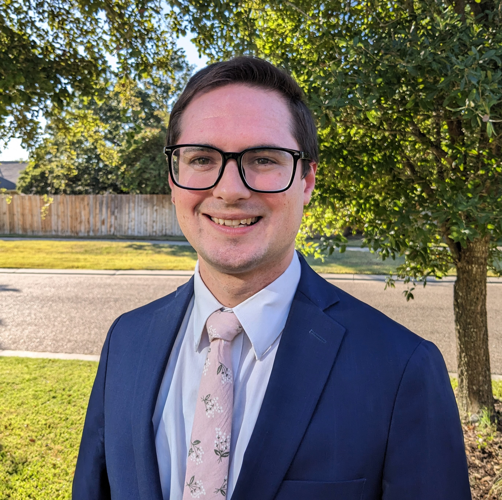

Upcoming Talks
- Co-Organizer: Minisymposium "Nonlinear Algebra in Applications", SIAM TX-LA sectional, Baylor University, Waco, TX, October 2024
- Special Session on Applications of Algebraic Geometry, Joint Math Meetings, Seattle, WA, January 2025
Mathematics PhD Candidate at Texas A&M University, Passionate Instructor


| Office | BLOC 640B |
| cbott2 [at] tamu [dot] edu | |
| Office Hours (MATH 142) | MWF 2:30-3:30pm BLOC 356, Tues 2:30-3:30pm BLOC 133 |
Talk at the Fields Institute, June 2024
Howdy! I am a PhD candidate in mathematics at Texas A&M University with a focus on algebraic geometry and its applications. I am passionate about teaching and have enjoyed teaching mathematics courses with an emphasis on business and finance applications.
When I'm not doing math, you can find me spending time with my wife and two children, or volunteering with The Church of Jesus Christ of Latter Day Saints. I am also a huge fan of board games and enjoy playing with friends and family whenever possible!
Feel free to reach out to me by email.